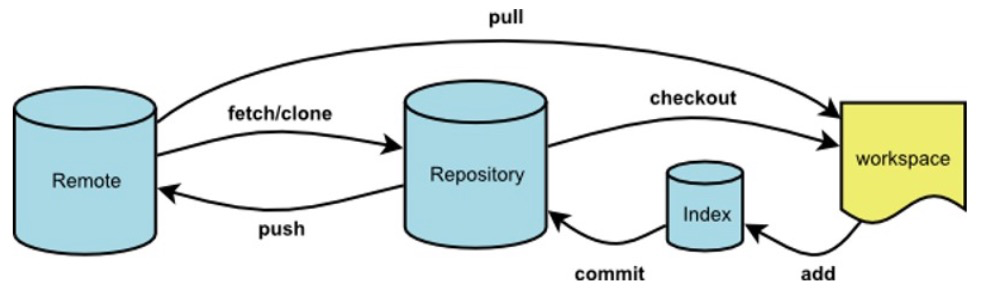

Git命令
Git命令
Git（读音为/gɪt/）是一个开源的分布式版本控制系统，可以有效、高速地处理从很小到非常大的项目版本管理。
Git仓库及命令执行的数据流图
Git常用命令
基础命令
git init
初始化一个Git仓库，在一个目录下执行该指令，表示将该目录初始化成一个Git本地工作区。
git add .
添加本地工作区下所有文件添加到到暂存区。
git commit -m xxx
将工作区的文件提交至本地仓库，并描述本次提交信息。
git fetch
从远程仓库获取最新版本数据到本地仓库，但不会自动merge到暂存区。最常见的场景如取回origin主机的master 分支：
1 | git fetch origin master |
取回更新后，会返回一个FETCH_HEAD ，指的是fetch的branch在服务器上的最新状态，我们可以在本地通过它查看刚取回的更新信息：
1 | maple@qixudongdeMacBook-Pro passport % git log -p FETCH_HEAD |
可以看到返回的信息包括更新的文件名，更新的作者和时间，以及更新的代码（19行红色[删除]和绿色[新增]部分）。我们可以通过这些信息来判断是否产生冲突，以确定是否将更新merge到当前分支。
git pull
从远程仓库拉取内容到本地，该命令的作用相当于下面两个命令的组合：
1 | git fetch origin master // 从远程主机的master分支拉取最新内容 |
git status
查看当前仓库的状态，即对是否哪些文件进行了修改|删除|增加等操作；
git diff [fileName]
查看所有文件[目标文件]在仓库中修改的具体信息（如果是新创建文件则无法查看修改），在第一次提交之后才能查看修改；如果输出信息太多自动分页，按 q 退出；
1 | maple@qixudongdeMacBook-Pro Test % git diff |
git log
查看从近到远的提交日志信息，包含提交时的commit描述信息。
1 | maple@qixudongdeMacBook-Pro Test % git log |
git log –pretty=oneline
仅显示一行提交的日志;
1 | maple@qixudongdeMacBook-Pro Test % git log --pretty=oneline |
其中: 7620e300373622ed19d784e37bbbea82a48678a6 称为提交版本号
版本回退
在Git中，用HEAD表示当前版本，也就是最新的提交7620e30…，上一个版本就是HEAD^，上上一个版本就是HEAD^^，当然往上100个版本写100个^比较容易数不过来，所以写成HEAD~100。
git reset –hard [提交的版本号]
版本回退到最新的一次提交（就是最近的一次提交），也可以通过指定版本号进行回退。
1 | maple@qixudongdeMacBook-Pro Test % git reset --hard HEAD^ |
Git的版本回退速度非常快，因为Git在内部有个指向当前版本的HEAD指针，当回退版本时，Git仅移动HEAD指针即可：
1 | ┌────┐ |
然后顺便把工作区的文件更新了。所以你让HEAD指向哪个版本号，你就把当前版本定位在哪。现在，你回退到了某个版本，关掉了电脑，第二天早上就后悔了，想恢复到新版本怎么办？找不到新版本的commit id怎么办？在Git中，总是有后悔药可以吃的。当你用$ git reset --hard HEAD^回退到add distributed版本时，再想恢复到append GPL，就必须找到append GPL的commit id。Git提供了一个命令git reflog用来记录你的每一次命令。
git reflog
记录每一次提交的命令。
1 | maple@qixudongdeMacBook-Pro Test % git reflog |
从输出可知，append GPL的commit id是7620e30，现在，你又可以乘坐时光机回到未来了。回退到原始版本:
1 | maple@qixudongdeMacBook-Pro Test % git reset --hard 7620e30 |
分支
查看本地所有分支：
git branch查看远程所有分支：
git branch -r查看本地和远程的所有分支：
git branch -a创建本地分支：
git branch <name>重命名本地分支：
git branch -m <oldbranch> <newbranch>切换分支：
git checkout <name> 或者 git switch <name>创建 + 切换分支：
git checkout -b <name> 或者 git switch -c <name>合并某分支到当前分支：
git merge <name>在merge的过程中可能会出现Conflict冲突，格式为：
1
2
3
4
5
6
7<<<<<<<<<HEAD
...
当前分支上的内容
=========
...
master分支合过来的内容
>>>>>>>>>master删除本地分支：
git branch -d <name>删除远程分支：
git push origin --delete <branchname>或git branch -d -r <branchname>本地分支推送至远程服务器：
git push origin <branchname>查看远程仓库的信息 | 加上 -v 参数，查看更详细的信息：git remote
或git remote -v`新建本地分之并关联远程已存在的分支：
git checkout -b <branchname> origin/<branchname>
Git信息设置
设置git全局的名称和邮箱
查看当前应用git的提交名称：
1 | git config user.name |
修改命令：
1 | git config --global user.name "新名称" |
设置单个项目提交用户名和邮箱
1 | git config user.name "新名称" |
之后可以打开当前项目的 .git/config 文件看配置生效如下：
1 | [user] |
配置文件优先级及路径基本语法
Git支持多级配置，分别是 system(系统级)、global（用户级）、local（项目级）和 worktree（工作区级）
配置优先级： worktree > local > global > system
- system系统级（安装路径/etc/gitconfig）： 系统级配置文件，对系统中所有用户都普遍适用的配置。使用
git config --system读写的就是这个文件 - global用户级（C:/Users/用户名/.gitconfig）： 用户级配置文件，用户目录下的配置文件只适用于该用户。使用
git config --global读写的就是这个文件。 - local项目级（某仓库的本地路径/.git/config）： 项目级配置文件，当前项目的 git仓库目录中的配置文件（也就是工作目录中的
.git/config文件）,这里的配置仅仅针对当前项目有效。使用git config [--local]读写的就是这个文件。 - worktree工作区级： 工作区级配置，此配置仅仅针对当前工作区有效。使用
git config --worktree进行配置。
每一个级别高的配置都会覆盖上层的相同配置，所以 .git/config 里的配置会覆盖 /etc/gitconfig 中的同名变量。针对单个项目的配置同样会覆盖全局的配置。
常见场景
Git 新建本地分支，且关联已存在的远程分支
先在远程仓库点击
New Branch新建一个远程分支拉取远程的分支到本地暂存区
1
git fetch
新建本地分支并关联远程分支，只是建立了连接通道
1
git checkout -b <本地分支名> <远程分支名>
拉取远程分支内容到本地分支
1
git pull
Git 终端新建本地分支和远程分支，且关联起来
- 在本地新建分支并切换
1 | git checkout -b <分支名> |
- 将本地分支提交到远程仓库，此过程会在远程仓库中创建一个名为
<本地分支名>的远程分支
1 | git push origin <本地分支名> |
- 本地分支与远程分支关联
1 | git branch --set-upstream-to=origin/远程分支名 |
Git 创建本地仓库关联远程仓库
本地创建了一个project，并在码云上创建了一个同名仓库，将本地的仓库链接到远程仓库。如果本地分支已经关联了远程的分支，在使用本地分支关联其他远程分支的时候会出现以下异常:
1 | fatal: remote origin already exists |
这种场景下需要先删除当前项目中本地连接已关联的远程分支：
1 | git remote rm origin |
- step1: 初始化本地仓库
1 | git init |
- step2: 添加远程仓库地址：
1 | git remote add origin <远程仓库地址> |
- step3: 拉取远程仓库内容到本地
1 | git pull origin master |
可能会出现下面的异常信息:
1 | maple@qixudongdeMacBook-Pro elastic-job % git pull origin master |
这是由于在远程创建仓库的时候有一个.gitignore文件,而是用git init命名也会在本地生成一个.gitignore 文件，所以出现了冲突；解决方法就是看需要保留哪一份，把不需要的删除即可，一般都是删除掉远程仓库中的.gitignore 文件。当然了，如果在开发者确定远程仓库中的内容是没用的前提下可以直接使用强制推送，直接对远程仓库进行覆盖，并进行本地和远程分支master的关联(这种操作仅限自己的项目,不能对工作项目使用强制推送):
1 | git push -f --set-upstream origin master |
这个强制覆盖的命令在团队开发的时候不要用，嘎嘎危险！！！
- step4: 添加本地工作区的修改到暂存区
1 | git add . |
- step5: 将暂存区的信息提交到本地仓库
1 | git commit -m "本次提交的信息备注" |
- step6: 推送本地仓库中的内容到远程仓库，并建立本地master分支和远程master分支的关联关系
1 | git push origin master |
or: 这个命令不好使，终端会提示需要使用--set-upstream origin master;
1 | git push --set-upstream origin master |
撤销修改
- 丢弃暂存区的修改
1 | git checkout -- fileName |
Demo：
1 | maple@qixudongdeMacBook-Pro Test % git status |
命令git checkout -- test.json意思就是，把test.json文件在工作区的修改全部撤销，这里有两种情况：
- 一种是
test.json自修改后还没有被放到暂存区，现在，撤销修改就回到和版本库一模一样的状态； - 一种是
test.json已经添加到暂存区后，又作了修改，现在撤销修改就回到添加到暂存区后的状态。
总之，就是让这个文件回到最近一次git commit或git add时的状态。
git checkout – file命令中的
--很重要，没有--就变成了切换到另一个分支的命令。
删除文件
1 | git rm <fileName> |
这个时候Git知道你删除了文件，因为工作区和版本库就不一致了，git status命令会立刻告诉你哪些文件被删除了：
1 | git status |
现在有两个选择:
一是确实要从版本库中删除该文件，那就用命令git rm删掉版本库中的文件，并且git commit：
1 | git rm test.txt |
另一种情况是删错了，因为版本库里还有，所以可以很轻松地把误删的文件恢复到最新版本：
1 | git checkout -- test.txt |
git checkout其实是用版本库里的版本替换工作区的版本，无论工作区是修改还是删除，都可以“一键还原”。
注意：从来没有被添加到版本库就被删除的文件，是无法恢复的！
命令
git rm用于删除一个文件。如果一个文件已经被提交到版本库，那么你永远不用担心误删，但是要小心，你只能恢复文件到最新版本，你会丢失最近一次提交后你修改的内容。
强制覆盖本地代码（与git远程仓库保持一致）
git强制覆盖：
1 | git fetch --all |
git强制覆盖本地命令（单条版本）：
1 | git fetch --all && git reset --hard origin/master && git pull |
解释:
第一个是：拉取远程仓库中的所有更新和不同步；
第二个是：本地代码同步线上最新版本(会覆盖本地所有与远程仓库上同名的文件)；
第三个是：再更新一次（其实也可以不用，第二步命令做过了其实）;
git存储
Git Stash 命令的使用
（1）git stash [save “save message”] : 执行存储时，添加备注，方便查找，只有git stash也是可以的，但查找时不方便识别。
（2）git stash list ：查看stash了哪些存储。
（3）git stash show ：显示做了哪些改动，默认show第一个存储，如果要显示其他存储，后面加stash@{$num}，如：第二个 git stash show stash@{1}
（4）git stash show -p : 详细地显示第一个存储的改动，如果想显示其他存存储，命令：git stash show stash@{$num} -p ，
比如第二个：git stash show stash@{1} -p。
（5）git stash apply : 应用某个存储，将存储的代码应用到当前分支代码中，但不会把存储从存储列表中删除，默认使用第一个存储，即stash@{0}，
如果要使用其他存储，使用git stash apply stash@{$num} ， 比如第二个：git stash apply stash@{1} 。
（6）git stash pop ：恢复存储，将对应修改应用到当前代码, 并将缓存堆栈中的stash删除, 默认为第一个stash，即stash@{0}，如果要应用并删除其他stash，
命令：git stash pop stash@{$num} ，比如：应用并删除第二个：git stash pop stash@{1}。
（7）git stash drop stash@{$num} ：丢弃stash@{$num}存储，从列表中删除这个存储。
（8）git stash branch
（9）git stash clear ：删除所有缓存的stash。
Git 终端新建本地分支和远程分支，且关联起来
 微信
微信